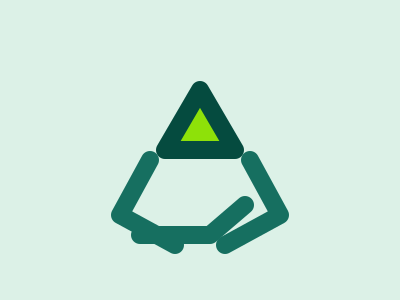
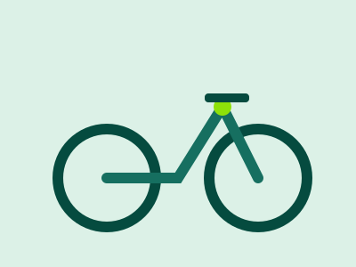
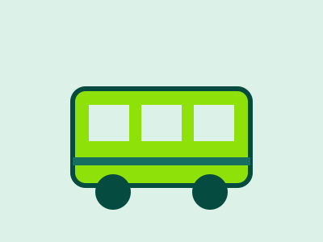
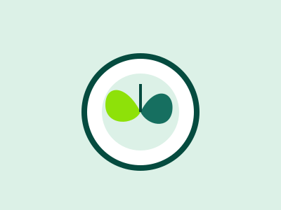
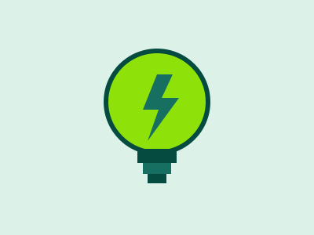
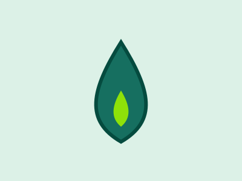
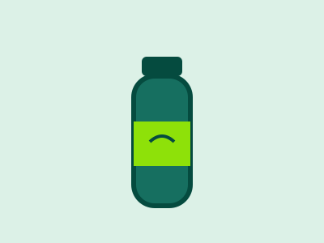
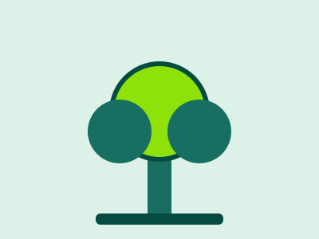

SDG 13: CLIMATE ACTION
Climate Action Quiz
This is not a test. There are no wrong answers. Select the everyday climate actions you could realistically take. As you choose, the quiz adds up your impact score, shows your overall impact level and changes the background to match it.
Pick Your Actions
Click a card to select or unselect it. Each action is worth a number of impact points.

Recycle & sort waste
Separate paper, glass and plastic so materials can be reused.
2 points
Cycle or walk
Swap a short car trip for cycling or walking each week.
3 points
Use public transport
Take the bus or train instead of driving alone.
3 points
Eat more plant-based
Choose meat-free meals a few days each week.
4 points
Save home energy
Switch to LED bulbs and turn off unused devices.
3 points
Reduce water use
Take shorter showers and fix dripping taps.
2 points
Use reusable items
Carry a refillable bottle and reusable shopping bags.
2 points
Plant or protect trees
Join a local tree-planting or clean-up event.
5 pointsYour Impact
Actions selected: 0
Total impact score: 0
Impact level: None yet
Select some actions above to see the impact of your choices.